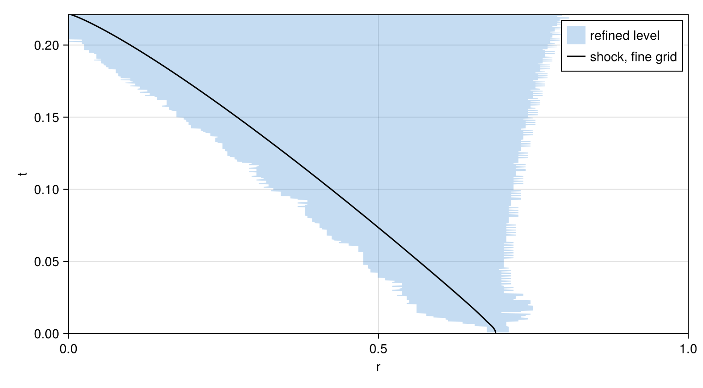
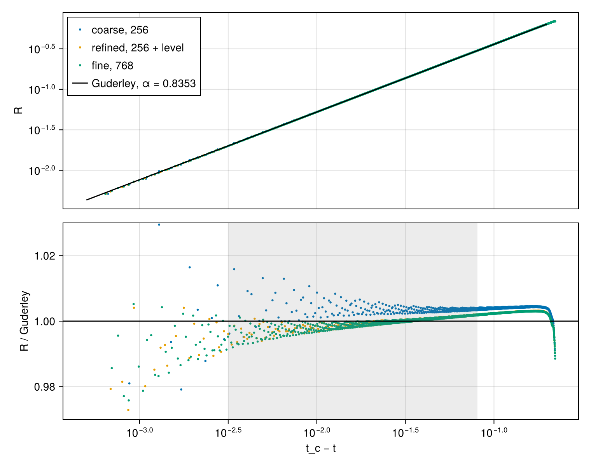
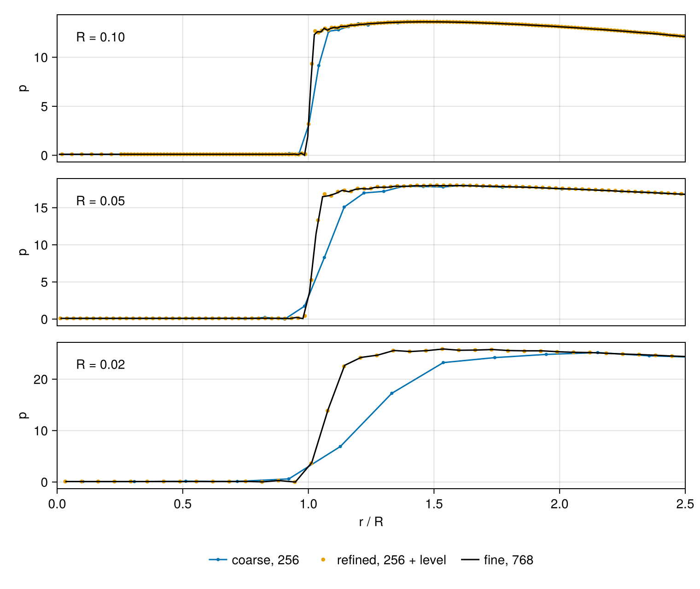

Imploding shock
A cylindrical shock moving inward strengthens as its front contracts. In the solution Guderley (1942) found for a strong shock in an ideal gas, its speed grows without bound as its radius $R$ goes to zero. Near the moment $t_c$ at which the shock reaches the axis, the flow is self-similar and the radius follows
\[R = A\,(t_c - t)^{\alpha}.\]
The shock speed is $U = \alpha R/(t_c - t)$, proportional to $R^{1 - 1/\alpha}$, a negative power of the radius. Unlike the exponent $2/5$ of the blast wave in Supernova remnant, $\alpha$ does not follow from the dimensions of the problem. It is the one value for which the flow behind the shock passes smoothly through a sonic point: an eigenvalue of the ordinary differential equations of the self-similar flow. For a gas with $\gamma = 1.4$ it is 0.8353 for a cylindrical shock and 0.7172 for a spherical one. Lazarus (1981) tabulates the first as 0.835323, and integrating the self-similar equations outward from the shock while bisecting on $\alpha$ reproduces that value.
On a fixed grid the shock spans a growing fraction of its own radius as it nears the axis. This tutorial adds a refined level that follows the shock inward, runs the calculation on a coarse grid, on the coarse grid with the refined level, and on a grid three times finer, and compares the exponent of each with Guderley's.
using CompactLES # re-exports MPI
MPI.Initialized() || MPI.Init(threadlevel=:funneled)
using CairoMakie
using Printf
CairoMakie.activate!(type = "png")
alpha_guderley = 0.8353Cylinder
CylindricalMetric reads the coordinates as $(r, \theta, z)$. As the sphere of Supernova remnant was resolved in radius alone, the cylinder is resolved in $r$ with $\theta$ and $z$ collapsed to one point each. AxisBC continues the flow through the axis, and a SlipWallBC closes the cylinder at $r = 1$.
The units are dimensionless. Gas at rest at density 1 and pressure 0.1 fills the cylinder, and an annulus beyond $r = 0.7$ holds gas four times as dense at pressure 20. When the calculation starts, the annulus drives a shock inward, as the driver gas of a shock tube does. tanh_blend spreads the initial jump over a width of 0.012, three spacings of the coarse grid. The shock moves through the cold gas at eight times its sound speed at $R = 0.3$ and fourteen times at $R = 0.02$.
problem = Problem(
name = "imploding shock",
eos = IdealSpecies("gas"; R = 1.0, gamma = 1.4),
metric = CylindricalMetric(),
domain = ((0.0, 1.0), (0.0, 1.0), (0.0, 1.0)),
bcs = ((AxisBC(), SlipWallBC()), PeriodicBC(), PeriodicBC()),
ic = (r, theta, z) -> begin
drive = tanh_blend(r, 0.7, 0.012)
Prim(rho = 1.0 + 3.0 * drive, p = 0.1 + 19.9 * drive)
end,
)Refinement
AMR, given to Numerics as amr, adds refined levels to the root grid, each with three times the resolution of its parent. With initial = :sensor, the default, the solver marks the root nodes at which the density varies too sharply for the grid: the undivided fourth difference of the density, divided by the density, exceeds tag_threshold = 0.02. The solver widens the marked set by tag_buffer = 4 nodes on each side and covers it with one refined box. Setup marks the nodes on the initial state and then evaluates the initial condition on the refined level's own nodes.
Every few steps the solver marks the nodes again on the current state and moves the box; fine nodes newly covered are interpolated from the root. The default interval is tag_buffer / (2 cfl) steps, four at the default CFL number of 0.5: a feature moves at most about cfl root nodes per step, so between two checks it crosses no more than half the buffer. When the box reaches the axis, the refined level carries the axis condition at its own spacing.
subcycle = true advances the refined level by three steps of a third of the root's step for each root step, with its boundary values interpolated in time from the root. Without it, every level takes the step the finest level allows.
amr = AMR(initial = :sensor, subcycle = true)Runs
The same callback serves all three runs. field_snapshot gathers the named fields at every node together with the node coordinates. Given the state vector of a refined run, it returns one snapshot per patch, ordered by level, each at its own spacing; given a single state, it returns one snapshot.
The shock radius is the point where the pressure, scanned outward from the axis, first exceeds 3, interpolated linearly between nodes. The pressure behind the shock is 8.7 at $R = 0.3$ and rises as the shock converges, so this level lies within the jump at every radius used below. The radius is read on the finest level whose nodes span the jump.
function shock_radius(snaps)
for snap in Iterators.reverse(snaps) # finest level first
r, p = snap.coords[1], vec(snap[:p])
i = findfirst(>(3.0), p)
(i === nothing || i == 1) && continue # the jump is not on this level
return r[i-1] + (r[i] - r[i-1]) * (3.0 - p[i-1]) / (p[i] - p[i-1])
end
return NaN
end
function implode(numerics)
solver, states = setup(problem, numerics)
mass0 = volume_integral(solver, states, :rho)
history = (t = Float64[], R = Float64[], box = Tuple{Float64,Float64}[])
profiles = []
targets = [0.1, 0.05, 0.02]
record = Callback(EveryStep(1), function (solver, states)
snaps = field_snapshot(solver, states; fields = (:p,))
snaps isa Vector || (snaps = [snaps])
R = shock_radius(snaps)
push!(history.t, solver.t)
push!(history.R, R)
length(snaps) > 1 && push!(history.box, extrema(snaps[end].coords[1]))
if !isempty(targets) && R < first(targets)
popfirst!(targets)
push!(profiles, (; R, snaps))
end
nothing
end)
run!(solver, states; tfinal = 0.221, nmax = 10_000, callback = record)
mass_change = volume_integral(solver, states, :rho) / mass0 - 1
return (; solver, states, history, profiles, mass_change)
end
coarse = implode(Numerics(n_global = (256, 1, 1)))
refined = implode(Numerics(n_global = (256, 1, 1), amr = amr))
fine = implode(Numerics(n_global = (768, 1, 1)))
runs = (("coarse, 256", coarse), ("refined, 256 + level", refined), ("fine, 768", fine))
for (label, run) in runs
@printf("%-22s %5d steps, relative mass change %.1e\n", label, run.solver.step,
run.mass_change)
endcoarse, 256 673 steps, relative mass change -2.2e-06
refined, 256 + level 1115 steps, relative mass change 5.8e-05
fine, 768 2025 steps, relative mass change -2.6e-07The runs stop at $t = 0.221$, just before the shock reaches the axis. The step counts are root steps; the refined level takes three for each. The refined run changes the mass by more than the uniform grids do, since neither the transfers between its levels nor the interpolation into a moved box is conservative.
Placement
The refined box follows the shock inward:
fig = Figure(size = (760, 420))
ax = Axis(fig[1, 1], xlabel = "r", ylabel = "t")
t, box = refined.history.t, refined.history.box
poly!(ax, Point2f.(vcat(first.(box), reverse(last.(box))), vcat(t, reverse(t))),
color = (:dodgerblue3, 0.25), label = "refined level")
lines!(ax, fine.history.R, fine.history.t, color = :black, label = "shock, fine grid")
xlims!(ax, 0, 1)
ylims!(ax, 0, 0.221)
axislegend(ax, position = :rt)
fig
The density criterion also marks the contact surface between the driving gas and the gas it pushes, and the tail of the rarefaction that runs outward from the initial jump, which stays near $r = 0.7$. One box covers them all, so it reaches from the shock out to the rarefaction, and its edges move back and forth by a few root nodes between checks as the marked set changes.
The inner edge of the box runs further ahead of the shock than the buffer alone would place it, because the criterion also marks small density disturbances that the refined level carries ahead of the shock once the box has moved. At the end the refined run holds more nodes than the uniform fine grid:
println(state_report(refined.solver, refined.states))StateReport(867 points; rho_min = 0.9685138529804447, e_min = 0.22649506518107507)Trajectory
A least-squares line through $\ln R$ against $\ln(t_c - t)$ gives $\alpha$ for a trial $t_c$; the fit takes the $t_c$ with the smallest residual.
function guderley_fit(history; window = (0.02, 0.3))
keep = window[1] .< history.R .< window[2]
t, R = history.t[keep], history.R[keep]
function line(tc)
x, y = log.(tc .- t), log.(R)
xm, ym = sum(x) / length(x), sum(y) / length(y)
slope = sum((x .- xm) .* (y .- ym)) / sum(abs2, x .- xm)
return slope, sum(abs2, y .- ym .- slope .* (x .- xm)), xm, ym
end
tcs = range(t[end], t[end] + 0.01; length = 2001)[2:end]
tc = tcs[argmin([line(tc)[2] for tc in tcs])]
alpha, _, xm, ym = line(tc)
return (; alpha, tc, xm, ym)
end
fits = [guderley_fit(run.history) for (_, run) in runs]
for ((label, _), f) in zip(runs, fits)
@printf("%-22s α = %.4f, t_c = %.5f\n", label, f.alpha, f.tc)
end
@printf("%-22s α = %.4f\n", "Guderley", alpha_guderley)coarse, 256 α = 0.8350, t_c = 0.22129
refined, 256 + level α = 0.8373, t_c = 0.22159
fine, 768 α = 0.8373, t_c = 0.22161
Guderley α = 0.8353The fit covers $0.02 < R < 0.3$, more than a decade in radius; at its lower end the shock is five coarse spacings from the axis. The upper panel below shows the three trajectories against Guderley's law, drawn through the center of the fine run's fit. The lower panel divides each radius by the law, so a trajectory that follows it lies on a horizontal line and a difference in the exponent appears as a tilt; the gray band is the fit window.
fig = Figure(size = (760, 600))
top = Axis(fig[1, 1], ylabel = "R", xscale = log10, yscale = log10)
bottom = Axis(fig[2, 1], xlabel = "t_c − t", ylabel = "R / Guderley", xscale = log10)
guderley(tau) = exp(fits[3].ym + alpha_guderley * (log(tau) - fits[3].xm))
for ((label, run), f, color) in zip(runs, fits, Makie.wong_colors())
keep = (run.history.R .> 0.005) .& (run.history.t .< f.tc)
tau, R = f.tc .- run.history.t[keep], run.history.R[keep]
scatter!(top, tau, R, color = color, markersize = 4, label = label)
scatter!(bottom, tau, R ./ guderley.(tau), color = color, markersize = 4)
end
tau = 10 .^ range(-3.3, -0.7; length = 50)
lines!(top, tau, guderley.(tau), color = :black, label = "Guderley, α = 0.8353")
tau_at(R) = exp(fits[3].xm + (log(R) - fits[3].ym) / alpha_guderley)
vspan!(bottom, tau_at(0.02), tau_at(0.3), color = (:gray, 0.15))
hlines!(bottom, [1.0], color = :black)
ylims!(bottom, 0.97, 1.03)
hidexdecorations!(top, grid = false)
linkxaxes!(top, bottom)
axislegend(top, position = :lt)
fig
The fine and refined trajectories lie on one tilted line: their exponent is 0.2% above Guderley's. The coarse run leaves that line close to the axis, where the shock spans a large fraction of its radius. Its exponent therefore depends on the window, while the refined and fine exponents do not:
println("window ", join((rpad(label, 22) for (label, _) in runs)))
for window in ((0.05, 0.3), (0.02, 0.3), (0.02, 0.1))
print(rpad(@sprintf("%.2f < R < %.2f", window...), 16))
for (_, run) in runs
print(rpad(@sprintf("%.4f", guderley_fit(run.history; window).alpha), 22))
end
println()
endwindow coarse, 256 refined, 256 + level fine, 768
0.05 < R < 0.30 0.8361 0.8374 0.8373
0.02 < R < 0.30 0.8350 0.8373 0.8373
0.02 < R < 0.10 0.8325 0.8368 0.8373The coarse exponent over the full window happens to lie close to Guderley's, but it falls by 0.4% as the window moves toward the axis. The refined run gives the fine run's exponent to within 0.0005 in each window.
The remaining 0.2% does not change with the resolution or the time step; on 1536 nodes, or with half the step, the exponent moves by 0.0003 or less. It depends on the strength of the shock and on how it is launched: with the cold gas at ten times the pressure, where the shock is weaker, the exponent is 0.845, and with the annulus at density 1 it is 0.839. Over these radii the shock has not fully settled onto Guderley's flow.
Pressure near the axis
The profiles below are taken as the shock passes $R = 0.1$, $0.05$ and $0.02$, plotted against $r/R$. The refined run is drawn on the nodes of each of its levels, without the root nodes the level covers.
fig = Figure(size = (760, 640))
axes = [Axis(fig[i, 1], ylabel = "p") for i in 1:3]
colors = (Makie.wong_colors()[1], Makie.wong_colors()[2], :black)
for (i, ax) in enumerate(axes)
for ((label, run), color) in zip(runs, colors)
prof = run.profiles[i]
for (k, snap) in enumerate(prof.snaps)
show = .!vec(snap.covered)
r, p = snap.coords[1][show] ./ prof.R, vec(snap[:p])[show]
label_k = k == 1 ? label : nothing
if run === refined
scatter!(ax, r, p, color = color, markersize = 6, label = label_k)
elseif run === fine
lines!(ax, r, p, color = color, label = label_k)
else
scatterlines!(ax, r, p, color = color, markersize = 5, label = label_k)
end
end
end
text!(ax, 0.03, 0.8, text = @sprintf("R = %.2f", (0.1, 0.05, 0.02)[i]),
space = :relative)
xlims!(ax, 0, 2.5)
i < 3 && hidexdecorations!(ax, grid = false)
end
axes[3].xlabel = "r / R"
linkxaxes!(axes...)
Legend(fig[4, 1], axes[1], orientation = :horizontal, framevisible = false)
fig
Each run spreads the shock over about three of its own node spacings. At $R = 0.02$ three coarse spacings are more than half the radius, and the coarse run's pressure rises over $0.9 < r/R < 1.5$. The refined run carries the shock on nodes three times closer, and its profile falls on the fine run's.
Composite profile
line_profile and volume_integral take the state vector of a refined run and combine its levels. line_profile returns the composite solution at the root's nodes, taking at each the value of the finest level that holds it:
r, p = line_profile(refined.solver, refined.states, :p)
@printf("%d points from r = %.4f to %.4f\n", length(r), first(r), last(r))256 points from r = 0.0020 to 1.0000This is the refined solution at the coarse run's sampling, convenient for a plot of the whole domain. The resolution the level adds is on the level's own nodes, as field_snapshot returns them, and the shock radius above is read there.
What this checks
- A converging cylindrical shock follows Guderley's law. The exponent is 0.2% above 0.8353 on the refined and fine grids; the difference depends on the strength and the launch of the shock, not on the resolution.
- A refined level placed by the density criterion follows the shock to the axis. Near the axis the refined run reproduces the trajectory and the pressure profile of a uniform grid three times finer, where the coarse grid alone departs from both.
This page was generated using Literate.jl.